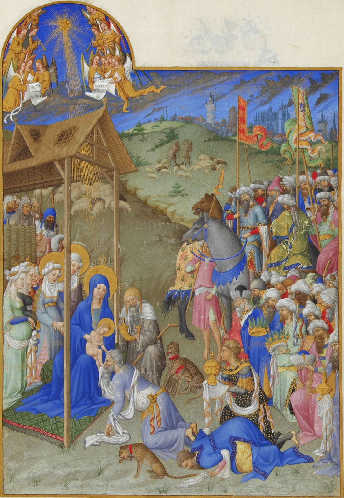

Tajemnica gwiazdy betlejemskiej
Gwiazda Betlejemska - nazwa zjawiska na nieba, które według biblijnego opowiadania ukazało się trzem królom jako znak narodzenia Jezusa Chrystusa.
Jednym z najbardziej prawdopodobnych scenariuszy tego zjawiska opisał brytyjski astronom Mark Kidger, według niego w czasie gdy urodził się Chrystus,
doszło do kilku niezwykłych i rzadkich zjawisk astronomicznych. Pierwszym z nich była koniunkcja Jowisza oraz Saturna w gwiazdozbiorze Ryb w 7 roku p.n.e.
podobne wydarzenie zaobserwował w XVII wieku Johannes Kepler. Drugim taki wydarzeniem była koniunkcja Jowisza, Saturna i Marsa w konstelacji Ryb w 6 roku p.n.e.
Trzecim fenomenem był rzadki układ ciał niebieskich. Z jednej strony koniunkcję stanowiły Księżyc i Jowisz, a z drugiej Mars i Saturn. Czwartym niecodziennym
zjawiskiem był wybuch supernowej w 5 roku p.n.e.

Park ciemnego nieba Bieszczady